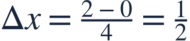
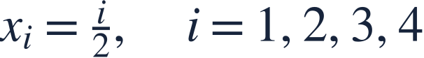
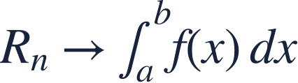

Riemann sums and sigma notation
리만합과 합 기호
A Riemann sum replaces curved accumulation with many narrow rectangles.
리만합은 곡선 아래 누적량을 여러 개의 좁은 직사각형으로 근사합니다.
A Riemann sum replaces curved accumulation with many narrow rectangles.
리만합은 곡선 아래 누적량을 여러 개의 좁은 직사각형으로 근사합니다.

Choose right endpoints and equal widths for this approximation.
이 근사에서는 오른쪽 끝점과 같은 폭을 사용합니다.
| right x | height |
|---|---|
| 0.5 | 0.25 |
| 1.0 | 1.00 |
| 1.5 | 2.25 |
| 2.0 | 4.00 |
Each rectangle contributes height times width; sigma notation adds the contributions.
각 직사각형은 높이와 폭의 곱을 기여하며 합 기호로 모두 더합니다.

The sample input changes with the index i.
표본 입력은 지표 i에 따라 바뀝니다.
Use all four right-endpoint heights and one common width.
오른쪽 끝점 높이 네 개와 공통 폭을 사용합니다.
Since x² increases here, right rectangles overestimate the integral.
이 구간에서 x²은 증가하므로 오른쪽 직사각형은 정적분을 과대추정합니다.

Forgetting Δx adds heights rather than areas.
Δx를 빠뜨리면 넓이가 아니라 높이만 더하게 됩니다.
Find the left-endpoint sum.
왼쪽 끝점을 사용한 합을 구하세요.